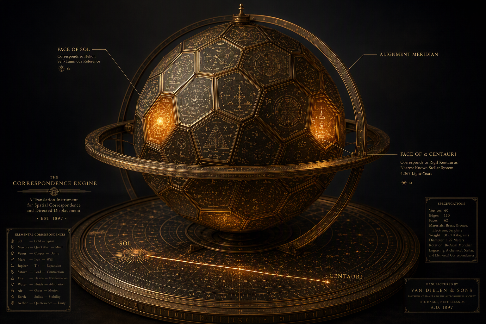

The Instrument as Proposed
The device, steelmanned Untestable as stated Speculative as metaphor
Here is the strongest form of the proposal, stated as its author would wish it stated. Imagine a solid of many faces — a polyhedron with more faces than a cube, each face engraved with an elemental chart: not the periodic table in the abstract, but a specific stellar environment’s roster — what the Sun’s photosphere holds and in what proportions; what Alpha Centauri A holds; what the interstellar medium between them holds. The operator selects a target face, then adjusts the device until the configuration of the elements and their behavior in that atmosphere is aligned — the machine tuned, face by face, to the way matter actually behaves under that sun. When the alignment is exact, the proposal holds, the distance ceases to matter: translation follows correspondence. To be configured exactly as a thing is configured there is, in the deepest reading, already to be there.
This is not a random fantasy; it is the modern heir of a doctrine with a genealogy this archive is built to respect. The Emerald Tablet’s axiom — that which is below is like that which is above — is precisely a claim that configuration, faithfully reproduced, bridges scale and distance. Newton spent decades on the “active principles” he believed mediated between realms — a vegetative spirit latent in matter, an aether whose local state carried influence (see Folio II and Atlas row 13). The Correspondence Engine is that lineage wearing the costume of a star catalogue: the faces are stellar atmospheres read as grimoire pages, the alignment operator is the alchemical concordance mechanized, and the promised translation is solve et coagula applied to position itself. As a piece of metaphysical architecture it is genuinely beautiful — the device says that identity is configuration, that a place is a recipe, and that whoever can read and reproduce the recipe has, in principle, already arrived.
The badge, stated now so the rest of the folio can be honest under it: as a claim about transport, the Engine is Untestable — no alignment operator is defined with units, no instrument measures “correspondence,” and no observation is specified that could count against it. As a metaphor for what stellar spectroscopy actually does — reading a distant world’s composition without leaving home — it is Speculative in the honorable sense: a genuine conceptual analogy, and Part II shows the analogy is far better than its proposer may know.

What the Device’s Faces Would Actually Contain
Stellar elemental charts are real, and they are beautiful
The proposal’s premise — that every celestial environment has an elemental chart, readable and comparable — is simply true, and the instrument that reads it is one of the triumphs of physics. In 1859 Kirchhoff and Bunsen showed that the dark Fraunhofer lines in the solar spectrum are absorption fingerprints of elements present in the solar atmosphere; within a decade helium was discovered in the Sun’s spectrum before it was found on Earth. Every face of the Engine, then, has a real counterpart: a stellar abundance table, derived from high-resolution spectra — equivalent widths and line profiles fitted against model atmospheres, with effective temperature, surface gravity, and microturbulence as the controlling parameters.1
Astronomers summarize the metal content of a star by metallicity, conventionally [Fe/H] — the logarithm of the star’s iron-to-hydrogen ratio relative to the Sun’s, so [Fe/H] = 0 is solar and each +0.1 dex is a ~26% enhancement. Our Sun sits at the reference point by definition; the nearest face worth engraving on the Engine is the Alpha Centauri system, 4.37 light-years out. Careful differential abundance work — the Luck & Heiter tradition of nearby-star analyses, and Neuforge-Verheecke & Magain’s dedicated Alpha Centauri study — finds the A component at roughly [Fe/H] ≈ +0.2 and B slightly lower, with the refractory-to-volatile abundance pattern tracking the Sun’s own trend with condensation temperature.2 So the first two faces of the device would differ modestly and measurably: Alpha Cen A is a slightly metal-richer Sun analog, its chart the same recipe with a heavier hand on the condensable elements. The charts are comparable, quantitative, and published — the proposal is right that worlds have recipes.
“Alignment of elements and how they behave” — the physics under the phrase
Translate “how the elements behave in that atmosphere” into physics and the phrase is still meaningful — it lands on real machinery. Element behavior in a stellar atmosphere is governed by phase diagrams (what condenses, what stays gaseous, at which pressure and temperature), by plasma chemistry (ionization stages, molecule formation, opacities), and beneath all of it by the Saha and Boltzmann statistics — partition functions that say, at a given temperature, exactly what fraction of iron is Fe II rather than Fe III, and therefore which spectral lines exist at all. An “aligned face” of the Engine, interpreted charitably, is a star whose partition functions, phase equilibria, and abundances match the target’s. This is a state of matter, fully specifiable in the laboratory: plasma physicists reproduce slices of stellar atmospheres every day.
And here the doctrine breaks, cleanly and instructively. Reproducing the state of a target environment does not produce the target’s position. A chamber of plasma tuned to Alpha Cen A’s photospheric abundances, ionization balance, and temperature is — a chamber of plasma, here. Configuration is a property a thing has; location is a relation it stands in, and no known field, force, or conserved quantity couples the first to the second. Re-labeling a configuration to match a distant configuration is exactly the archive’s structural finding in miniature: a measurable quantity (abundance, ionization, temperature — all real, all with units) silently asked to perform the work of an undefined homonym (“correspondence”) that carries no coupling constant, no channel, and no energy budget. Teleporting even a gram of hydrogen to Alpha Centauri requires getting that gram’s mass-energy there — and no alignment of charts pays that bill. The Engine’s faces are a magnificent instrument for knowing a world; the doctrine mistakes knowing for going.
What Physics Actually Allows
(a) Quantum teleportation — real, and precisely not this Established
Quantum teleportation is real, replicated, and routinely misread as the physics version of the Engine. Bennett et al. (1993) showed that an unknown quantum state can be transferred between distant parties using a shared entangled pair plus a classical communication channel; the original state is destroyed at the source (the no-cloning theorem forbids copying it) and reconstructed at the receiver.3 The distances are now planetary: in 2017 the Pan Jian-Wei group teleported qubit states from a ground station in Tibet to the Micius satellite, up to 1,400 km (arXiv:1707.00934; Nature 549:70).4
But the word “teleportation” is doing quiet violence. What crosses the distance is information about a state — never matter, never energy, and never faster than light, because the classical channel is load-bearing and the no-signalling theorem stands guard. Quantum teleportation is the Engine with the poetry removed and the honesty left in: correspondence of state, achieved through a physical channel, at the cost of the original. It is the strongest evidence in this folio that configuration-transfer is a coherent concept — and its every working part is the opposite of the doctrine’s: entanglement is a measured resource, the channel is metered, and nothing about the target’s elemental chart plays any role at all.
(b) Traversable wormholes — a real solution, a missing ingredient Speculative
Morris and Thorne (1988, Am. J. Phys. 56:395) asked what general relativity would require for a wormhole a traveler could survive, and answered precisely: a throat threaded by negative energy density — “exotic matter” violating the averaged null energy condition — in macroscopic quantity.5 Quantum field theory permits negative energy only in small, constrained doses (the Casimir effect, quantum interest conjectures); nothing known supplies a stable, meter-scale throat. This is the honest status of the Engine’s most charitable physics reading: the geometry is on the blackboard; the fuel is not in the universe as far as we can measure.
The government connection is real and worth stating accurately. Under the AAWSAP contract, Eric W. Davis authored a Defense Intelligence Reference Document titled Traversable Wormholes, Stargates, and Negative Energy — one of the 38 DIRDs released via FOIA in March 2022 (see Folio V). It exists; it is government-commissioned; and AARO’s verdict on the set applies to it verbatim: speculative literature surveys, not demonstrated technology. The document proves the question was taken seriously enough to fund a survey; the survey itself is the ceiling of what was found.
(c) The AFRL Teleportation Physics Study — real document, speculative content Document real Content speculative
In 2004 the Air Force Research Laboratory published Davis’s Teleportation Physics Study (Final Technical Report, AFRL-PR-ED-TR-2003-0034; DTIC ADA425452) — a serious, 88-page taxonomy distinguishing p-teleportation (psychokinetic), q-teleportation (quantum, the real one), and e-teleportation (engineering/exotic-matter routes, including wormholes).6 The split verdict is the whole finding: the document exists, the literature it surveys is honestly catalogued, and its exotic chapters remain literature. It belongs in this archive next to the Gateway report — another desk study misread by enthusiasts as an experimental result. Governments fund maps of the possible; the map is not the territory, and it is certainly not the machine.
(d) Star-Trek-style matter teleportation Refuted as stated
The popular image — scan a person, transmit, reassemble — fails not on engineering patience but on arithmetic. A human comprises ~1028 atoms; specifying their positions, chemical states, and (for fidelity to memory and metabolism) relevant molecular conformations yields an information content vastly beyond any conceivable channel — estimates run to ~1042–1045 bits under generous assumptions. Worse, a full quantum description cannot even be extracted: measurement disturbs the state, decoherence destroys coherent information on femtosecond-to-microsecond timescales in warm wet tissue, and the no-cloning theorem (Wootters & Zurek 1982) forbids the perfect copy the transporter requires in principle, not merely in practice.7 Reassembly adds an energy and error-correction budget with no named source. The verdict is the archive’s cleanest: the claim made a testable commitment — a channel, a scanner, a copy — and established physics forbids each part.
The Astral Question
Astral travel to physical matter — experiences real, transfer unproven Plane untestable Exterior perception refuted
The Engine’s older sibling is the astral claim: that consciousness can travel to distant physical places and report back. The honest inventory, again in two columns. Out-of-body experiences are real subjective events with identified neurology. Blanke and colleagues localized the core machinery to the temporoparietal junction — a multisensory integration area whose disruption (by seizure focus, stimulation, or virtual-reality manipulations of body ownership) reliably produces the felt separation from the body (Blanke et al. 2002, Nature 419:269; 2004, Brain 127:243).8 The phenomenology is reproducible in the laboratory; no one need invoke a plane.
The government record is real and negative, as Folio V documents. The CIA’s 1983 Gateway assessment (CIA-RDP96-00788R001700210016-5) is a desk study of the Monroe Institute’s program — judged “plausible,” demonstrating nothing (see Folio V · Gateway). Project Stargate ran twenty-three years of remote viewing; the 1995 American Institutes for Research evaluation split between Utts (statistically significant lab effects) and Hyman (methodological flaws, no independent replication), and the operational verdict was unanimous where it counted: no actionable intelligence, ever; terminated June 30, 1995.9 The folio’s verdict, per the split-verdict precedence rule: the astral plane as a posit is Untestable — no distinguishing prediction — while its one testable component, verified exterior perception of distant physical targets, committed and failed: Refuted. What survives intact is the experience itself, which is real, neurological, and belongs to the traveler’s brain rather than to Alpha Centauri.
If We Were to Test the Engine
Energy-scale clause · binding, per Part B convention
B9 is written under the same clause that governs B1–B8: no hypothesis is publishable on this site without a coherence timescale, a substrate, a falsifier, and its coupling amplitude against the relevant noise floor. B9’s coupling amplitude is displayed below; it is the point of the exercise.
B9 · The Correspondence Alignment Test Untestable unless the operator predicts
Claim. A formalized “alignment operator” — defined in advance, with units — maps the elemental configuration of a local sample onto a target stellar environment’s abundance table (Sun, Alpha Cen A/B, drawn from the published spectroscopic literature), such that increasing alignment produces a measurable transport or correlation effect beyond chance.
Apparatus. Spectroscopic abundance tables as the “faces” (Sun: Asplund-era photospheric abundances; Alpha Cen A/B: differential analyses per Luck & Heiter lineage); the Engine face-plates as labeled sample holders; and — the non-negotiable addition — a written, preregistered definition of the alignment metric (e.g., a chi-square distance between the sample’s measured composition by ICP-MS/XRF and the target’s published abundances), together with the claimed measurable endpoint: a detector coincidence, a tracer displacement, an information channel, anything with an instrument and a noise floor. Tier T1–T2; the expensive part is the honesty, not the hardware.
Protocol (preregistered). N ≥ 200 trials; conditions (a) maximal computed alignment, (b) deliberately mis-aligned controls, (c) sham alignment with labels randomized and analysts blinded; endpoints and success thresholds fixed before data collection; the claimed effect must exceed the surrogate/sham 99th percentile and scale monotonically with the alignment metric. Quantitative prediction required: any alignment metric must predict a measurable transport or correlation effect beyond chance at a stated effect size; a metric that predicts nothing is, by definition, not under test — it is under admiration.
Falsifier. Null if the maximal-alignment condition is statistically indistinguishable from sham across the full trial series, or if the claimed endpoint fails to track the alignment metric monotonically. Either outcome retires the transport reading while leaving the abundance tables — the real faces — untouched.
Energy-scale check (stated as the design’s premise). No known field couples elemental-abundance correspondence to position. The four interactions (gravitational, electromagnetic, strong, weak) couple to mass-energy, charge, color, and flavor — none to “similarity of configuration with a distant atmosphere.” The coupling amplitude is therefore not small; it is zero by inventory, and any claimed signal must first name the channel it travels. This is the B1 discipline applied at the threshold: the bound is stated before the experiment, not after.
Grade. Untestable as the doctrine currently stands — unless the alignment operator produces a measurable, preregistered prediction, in which case it graduates to Frontier and takes its place in the risk table beside B1–B8. That offer is the archive’s respect, operationalized: the Engine is one honest definition away from being science.
The Correspondence Table
Device concepts mapped to physics analogs — graded
| # | Engine concept | Physics analog | Grade | Honest verdict |
|---|---|---|---|---|
| 1 | Face = elemental chart of a celestial environment | Stellar abundance tables from high-resolution spectroscopy; [Fe/H] metallicity | Established | Real and beautiful. Sun vs. Alpha Cen A/B charts exist in the literature (A ≈ +0.2 dex); the faces are the strongest part of the device. |
| 2 | “Alignment” of the element configuration | Matching abundances, ionization balance (Saha), partition functions, phase state | Speculative | A definable state of matter — reproducible in plasma labs — but alignment so defined is a measurement exercise, not a mechanism. Graduates to Frontier only if B9’s operator yields a prediction. |
| 3 | “How the elements behave in that atmosphere” | Phase diagrams; plasma chemistry; opacity and condensation sequences | Established | Genuine, quantitative science of stellar atmospheres; the phrase maps cleanly onto real equations of state. |
| 4 | Translation follows correspondence (transport) | — no known coupling of configuration-similarity to position | Untestable | No channel, no coupling constant, no energy budget. The core claim of the Engine and the folio’s central negative finding. |
| 5 | Quantum teleportation as the claimed precedent | Entanglement + classical channel; Micius 2017; no-signalling | Established — as information transfer only | Transfers state information, destroys the original, moves no matter or energy, and never exceeds light speed. A precedent for honesty about correspondence, not for translation. |
| 6 | Wormhole / stargate channel (Davis DIRD; AFRL 2004) | Morris–Thorne metric; negative energy; quantum inequalities | Speculative | Real geometry, missing fuel; the documents are real surveys of the gap. AARO: speculative literature survey. |
| 7 | Matter teleportation of a person | Scan–transmit–reassemble | Refuted as stated | ~10^28 atoms with states exceed any conceivable channel; decoherence and no-cloning forbid the copy in principle. |
| 8 | Astral travel to physical locations | OBE neurology (temporoparietal junction); remote-viewing statistics | Untestable Testable part refuted | Experiences real, neurological; verified exterior perception never demonstrated; Stargate operationally useless, terminated 1995. |
The grading-object rule applies throughout: badges grade the correspondence as asserted, not the beauty of the device. Rows 1 and 3 survive because they were never metaphysical; row 4 fails because it was never physical.
- Stellar spectroscopy and abundance analysis: Gray, The Observation and Analysis of Stellar Photospheres (Cambridge); solar abundances: Asplund et al. 2009, doi.org/10.1146/annurev.astro.46.060407.145222. ↩
- Alpha Centauri abundances: Neuforge-Verheecke & Magain 1997, A&A 328:261, ADS 1997A&A...328..261N (A: [Fe/H] ≈ +0.24, B ≈ +0.23); nearby-star differential tradition: Luck & Heiter 2006, AJ 131:3069, ADS 2006AJ....131.3069L. Refractory/volatile condensation-temperature trends: Meléndez et al. 2009, doi.org/10.1088/0004-637X/704/1/L66. ↩
- Bennett et al., “Teleporting an Unknown Quantum State via Dual Classical and Einstein-Podolsky-Rosen Channels,” Phys. Rev. Lett. 70:1895 (1993), doi.org/10.1103/PhysRevLett.70.1895. ↩
- Ren et al., “Ground-to-satellite quantum teleportation,” Nature 549:70 (2017), arXiv:1707.00934, doi.org/10.1038/nature23675. ↩
- Morris & Thorne, “Wormholes in spacetime and their use for interstellar travel,” Am. J. Phys. 56:395 (1988), doi.org/10.1119/1.15620; AARO Historical Record Vol. I (March 2024), aaro.mil. ↩
- Davis, Teleportation Physics Study, AFRL-PR-ED-TR-2003-0034 (2004), DTIC accession ADA425452: apps.dtic.mil/sti/citations/ADA425452. ↩
- No-cloning: Wootters & Zurek, Nature 299:802 (1982), doi.org/10.1038/299802a0. Information-content argument: see the FAS Teleportation Physics Study critique and standard treatments of quantum information limits. ↩
- Blanke et al., “Stimulating illusory own-body perceptions,” Nature 419:269 (2002), doi.org/10.1038/nature00989; Blanke et al., Brain 127:243 (2004), doi.org/10.1093/brain/awh040. ↩
- Gateway assessment: CIA-RDP96-00788R001700210016-5, cia.gov/readingroom; AIR evaluation of Stargate (1995; Utts/Hyman commentaries): CIA-RDP96-00791R000200180005-5, cia.gov/readingroom. ↩